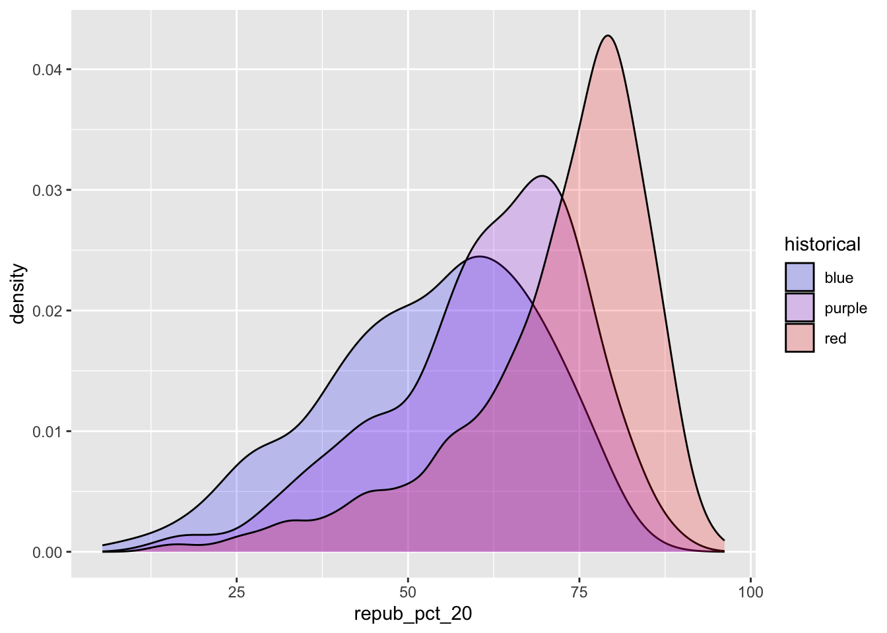

7 Bivariate Viz
Use this file for practice with the bivariate viz in-class activity. Refer to the class website for details.
8 Import data
9 How many students have now filled out the survey?
10 hmmm… nope!
head(survey) #did that work? I think so. nrow(survey)
11 What type of variables do we have?
[1] "data.frame"[1] "list"[1] "list"'data.frame': 28 obs. of 4 variables:
$ cafe_mac : chr "Cheesecake" "Cheese pizza" "udon noodles" "egg rolls" ...
$ minutes_to_campus: int 15 10 4 7 5 35 5 15 7 20 ...
$ fave_temp : num 18 24 18 10 18 7 75 24 13 16 ...
$ hangout : chr "the mountains" "a beach" "the mountains" "a beach" ...12 Attach a package needed to use the ggplot function
── Attaching core tidyverse packages ──────────────────────── tidyverse 2.0.0 ──
✔ dplyr 1.1.4 ✔ readr 2.1.5
✔ forcats 1.0.0 ✔ stringr 1.5.1
✔ ggplot2 3.5.1 ✔ tibble 3.2.1
✔ lubridate 1.9.4 ✔ tidyr 1.3.1
✔ purrr 1.0.2
── Conflicts ────────────────────────────────────────── tidyverse_conflicts() ──
✖ dplyr::filter() masks stats::filter()
✖ dplyr::lag() masks stats::lag()
ℹ Use the conflicted package (<http://conflicted.r-lib.org/>) to force all conflicts to become errors13 Make a ggplot for hangouts
14 Make a ggplot for temperatures
ggplot (survey, aes (x=fave_temp))+
geom_histogram(color = "blue", fill = "dark blue")+
labs(x= "Location", y = "# of Responses")`stat_bin()` using `bins = 30`. Pick better value with `binwidth`.
ggplot (survey, aes (x=fave_temp))+
geom_density(color = "blue", fill = "dark blue")+
labs(x= "Location", y = "# of Responses") temp_3pm temp_9am
1 24 14
2 26 18
3 20 15
4 15 13
5 15 11
6 15 11weather <- data.frame(temp_3pm = c(24, 26, 20, 15, 15, 0, 40, 60, 57, 44, 51, 75),
location = rep(c("A", "B"), each = 6))
weather temp_3pm location
1 24 A
2 26 A
3 20 A
4 15 A
5 15 A
6 0 A
7 40 B
8 60 B
9 57 B
10 44 B
11 51 B
12 75 B
weather <- data.frame(rain_today = c("no", "no", "no", "no", "yes", "no", "yes", "no", "yes", "yes", "no", "yes"),
location = c(rep("A", 7), rep("B", 5)))
weather rain_today location
1 no A
2 no A
3 no A
4 no A
5 yes A
6 no A
7 yes A
8 no B
9 yes B
10 yes B
11 no B
12 yes B
# Load data
elections <- read.csv("https://mac-stat.github.io/data/election_2020_county.csv")
# Check it out
head(elections) state_name state_abbr historical county_name county_fips total_votes_20
1 Alabama AL red Autauga County 1001 27770
2 Alabama AL red Baldwin County 1003 109679
3 Alabama AL red Barbour County 1005 10518
4 Alabama AL red Bibb County 1007 9595
5 Alabama AL red Blount County 1009 27588
6 Alabama AL red Bullock County 1011 4613
repub_pct_20 dem_pct_20 winner_20 total_votes_16 repub_pct_16 dem_pct_16
1 71.44 27.02 repub 24661 73.44 23.96
2 76.17 22.41 repub 94090 77.35 19.57
3 53.45 45.79 repub 10390 52.27 46.66
4 78.43 20.70 repub 8748 76.97 21.42
5 89.57 9.57 repub 25384 89.85 8.47
6 24.84 74.70 dem 4701 24.23 75.09
winner_16 total_votes_12 repub_pct_12 dem_pct_12 winner_12 total_population
1 repub 23909 72.63 26.58 repub 54907
2 repub 84988 77.39 21.57 repub 187114
3 repub 11459 48.34 51.25 dem 27321
4 repub 8391 73.07 26.22 repub 22754
5 repub 23980 86.49 12.35 repub 57623
6 dem 5318 23.51 76.31 dem 10746
percent_white percent_black percent_asian percent_hispanic per_capita_income
1 76 18 1 2 24571
2 83 9 1 4 26766
3 46 46 0 5 16829
4 75 22 0 2 17427
5 88 1 0 8 20730
6 22 71 0 6 18628
median_rent median_age
1 668 37.5
2 693 41.5
3 382 38.3
4 351 39.4
5 403 39.6
6 276 39.615 Exercise 0
ggplot(elections, aes(x = winner_20)) +
geom_bar(color = "blue", fill = "pink") +
labs(x = "Party", y = "Vote Count")
ggplot(elections, aes(x = repub_pct_20)) +
geom_histogram(color = "blue", fill = "pink") +
labs(x = "Party", y = "Vote Count")`stat_bin()` using `bins = 30`. Pick better value with `binwidth`.#Exercise 1
# Set up the plotting frame
# How does this differ than the frame for our histogram of repub_pct_20 alone?
ggplot(elections, aes(y = repub_pct_20, x = repub_pct_16))
# Add a layer of points for each county
# Take note of the geom!
ggplot(elections, aes(y = repub_pct_20, x = repub_pct_16)) +
geom_point()
# Change the shape of the points
# What happens if you change the shape to another number?
ggplot(elections, aes(y = repub_pct_20, x = repub_pct_16)) +
geom_point(shape = 2)
# YOU TRY: Modify the code to make the points "orange"
# NOTE: Try to anticipate if "color" or "fill" will be useful here. Then try both.
ggplot(elections, aes(y = repub_pct_20, x = repub_pct_16)) +
geom_point(color = "orange")
# Add a layer that represents each county by the state it's in
# Take note of the geom and the info it needs to run!
ggplot(elections, aes(y = repub_pct_20, x = repub_pct_16)) +
geom_point(color = "orange")+
geom_text(aes(label = state_abbr))
#Exercise 3: Reflect
Strong positive linear correlation indicating that there is a strong relationship between the way a county votes from one election year to the next.
There seems to be a few outliers in Texas… although it is hard to see on this very crowded graph.
#Exercise 4: Visualizing trend
`geom_smooth()` using method = 'gam' and formula = 'y ~ s(x, bs = "cs")'
`geom_smooth()` using method = 'gam' and formula = 'y ~ s(x, bs = "cs")'
ggplot(elections, aes(y = repub_pct_20, x = repub_pct_16)) +
geom_point() +
geom_smooth(method = "lm")`geom_smooth()` using formula = 'y ~ x'
#Exercise 5: Your Turn
To examine how the 2020 results are related to some county demographics, construct scatterplots of repub_pct_20 vs median_rent, and repub_pct_20 vs median_age. Summarize the relationship between these two variables and comment on which is the better predictor of repub_pct_20, median_rent or median_age.
# Scatterplot of repub_pct_20 vs median_rent
ggplot(elections, aes(y = repub_pct_20, x = median_rent)) +
geom_point() +
geom_smooth(method = "lm")`geom_smooth()` using formula = 'y ~ x'
There is a fair negative linear relationship between median rent and percent of republican vote. This could indicate that with higher rents, there is less of a tendency to vote Republican.
# Scatterplot of repub_pct_20 vs median_age
ggplot(elections, aes(y = repub_pct_20, x = median_age)) +
geom_point() +
geom_smooth(method = "lm")`geom_smooth()` using formula = 'y ~ x'
This visualization shows a poor positive linear relationship between age and Republican vote, indicating that age may not be a good predictor for political voting.
#Exercise 6: A Sad Scatterplot
Next, let’s explore the relationship between a county’s 2020 Republican support repub_pct_20 and the historical political trends in its state. In this case repub_pct_20 is quantitative, but historical is categorical. Explain why a scatterplot might not be an effective visualization for exploring this relationship. (What questions does / doesn’t it help answer?)

This graph shows that there is a wide spread of percentage of republican voting in counties that are historically blue, purple, and red, with a very slight dominance in red counties.
#Exercise 7: Quantitative vs Categorical – Violins & Boxes
Though the above scatterplot did group the counties by historical category, it’s nearly impossible to pick out meaningful patterns in 2020 Republican support in each category. Let’s try adding 2 different geom layers to the frame:
# Side-by-side violin plots
ggplot(elections, aes(y = repub_pct_20, x = historical)) +
geom_violin()
# Side-by-side boxplots (defined below)
ggplot(elections, aes(y = repub_pct_20, x = historical)) +
geom_boxplot()
From the above plots, I can surmise that there is a higher median of percent Republican votes in red counties, and that that pattern steadily decreases from red to purple to blue. There is a sharp buldge in red counties for ~75% of votes to be Republican.
#Exercise 8: Quantitative vs Categorical – Intuition Check
We can also visualize the relationship between repub_pct_20 and historical using our familiar density plots. In the plot below, notice that we simply created a separate density plot for each historical category. (The plot itself is “bad” but we’ll fix it below.) Try to adjust the code chunk below, which starts with a density plot of repub_pct_20 alone, to re-create this image.

Hm… I have no idea how to adjust the code. Three minutes are up! HMMM IT WAS JUST ADDING FILL? WUT.
#Exercise 9: Quantitative vs Categorical – Density Plots
# Name two "bad" things about this plot
ggplot(elections, aes(x = repub_pct_20, fill = historical)) +
geom_density()
The overlap is very confusing and I am not sure where the counties come into play…
# What does scale_fill_manual do?
ggplot(elections, aes(x = repub_pct_20, fill = historical)) +
geom_density() +
scale_fill_manual(values = c("blue", "purple", "red"))
**scale_fill_manual seems to change the colors of the scale based on categorical values.
# What does alpha = 0.5 do?
# Play around with different values of alpha, between 0 and 1
ggplot(elections, aes(x = repub_pct_20, fill = historical)) +
geom_density(alpha = 0.2) +
scale_fill_manual(values = c("blue", "purple", "red"))
“Alpha = some number” seems to adjust transparency. With 0 being translucent and 1 being opaque.
# What does facet_wrap do?!
ggplot(elections, aes(x = repub_pct_20, fill = historical)) +
geom_density() +
scale_fill_manual(values = c("blue", "purple", "red")) +
facet_wrap(~ historical)
“facet_wrap” separates each of the categorical values and places them side by side.
# Let's try a similar grouping strategy with a histogram instead of density plot.
# Why is this terrible?
ggplot(elections, aes(x = repub_pct_20, fill = historical)) +
geom_histogram(color = "white") +
scale_fill_manual(values = c("blue", "purple", "red"))`stat_bin()` using `bins = 30`. Pick better value with `binwidth`.
This is terrible because the colors suuuuck but also because I still don’t understand the county breakdown and it’s hard to see how blue compares with purple, etc except to say that red is the predominant predictor (sometimes… it’s confusing).
#Exercise 10
We’ve now learned 3 (of many) ways to visualize the relationship between a quantitative and categorical variable: side-by-side violins, boxplots, and density plots.
Which do you like best? I like boxplots, but maybe that’s just because I have had the most exposure to them.
What is one pro of density plots relative to boxplots? Pros include better side by side comparison, clearer outline of where density is at it’s max.
What is one con of density plots relative to boxplots? Hard to see the spread, ie maximums and minimums are a bit convoluted in the violin plots
#Exercise 11: Categorical vs Categorical – Intuition Check
Finally, let’s simply explore who won each county in 2020 (winner_20) and how this breaks down by historical voting trends in the state. That is, let’s explore the relationship between 2 categorical variables! Following the same themes as above, we can utilize grouping features such as fill/color or facets to distinguish between different categories of winner_20 and historical.
# Plot 1: adjust this to recreate the top plot
ggplot(elections, aes(x = historical, fill = winner_20)) +
geom_bar()+
scale_fill_manual(values = c("blue", "red"))# Plot 2: adjust this to recreate the bottom plot
ggplot(elections, aes(x = winner_20)) +
geom_bar()+
facet_wrap(~historical)
#Exercise 12: Categorical vs Categorical Construct the following 4 bar plot visualizations.
# A stacked bar plot
# How are the "historical" and "winner_20" variables mapped to the plot, i.e. what roles do they play?
ggplot(elections, aes(x = historical, fill = winner_20)) +
geom_bar()

# A side-by-side bar plot
# Note the new argument to geom_bar
ggplot(elections, aes(x = historical, fill = winner_20)) +
geom_bar(position = "dodge")
# A proportional bar plot
# Note the new argument to geom_bar
ggplot(elections, aes(x = historical, fill = winner_20)) +
geom_bar(position = "fill")
#Part a Name one pro and one con of using the “proportional bar plot” instead of one of the other three options.
#Part b What’s your favorite bar plot from part and why?
#Exercise 13: Practice (now or later) Import some daily weather data from a few locations in Australia:
Construct plots that address the research questions in each chunk. You might make multiple plots–there are many ways to do things!. However, don’t just throw spaghetti at the wall.
Reflect before doing anything. What types of variables are these? How might you plot just 1 of the variables, and then tweak the plot to incorporate the other?
# How do 3pm temperatures (temp3pm) differ by location?
# In answering this question we have two variables, one numeric and one categorical. Therefore it is probably best to have either boxplots, violin plots, or a stacked density plot.
#density plot
ggplot(weather, aes(x = temp3pm, fill = location)) +
geom_density(alpha = 0.5) +
scale_fill_manual(values = c("pink", "purple","green"))+
facet_wrap(~ location)Warning: Removed 19 rows containing non-finite outside the scale range
(`stat_density()`).Warning: Removed 19 rows containing non-finite outside the scale range
(`stat_ydensity()`).# How might we predict the 3pm temperature (temp3pm) by the 9am temperature (temp9am)?
#Similar to the early exercises, we could make a scatter plot and fit it with a line of best fit.
ggplot(weather, aes(y = temp3pm, x = temp9am)) +
geom_point() +
geom_smooth(method = "lm")`geom_smooth()` using formula = 'y ~ x'Warning: Removed 27 rows containing non-finite outside the scale range
(`stat_smooth()`).Warning: Removed 27 rows containing missing values or values outside the scale range
(`geom_point()`).